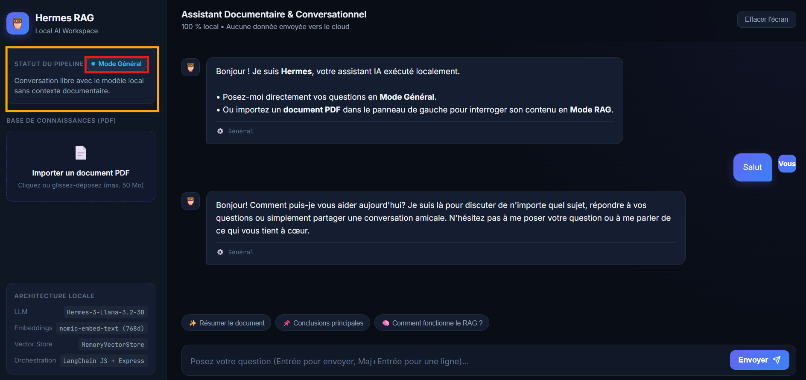
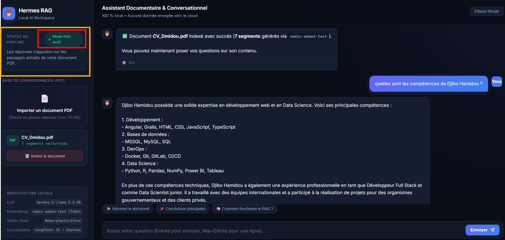

Application web full-stack d'assistant conversationnel et documentaire exécutée intégralement en local. Elle permet d'interagir avec un grand modèle de langage (LLM) ou d'interroger le contenu de documents PDF via une architecture Retrieval-Augmented Generation (RAG), sans qu'aucune donnée ne quitte la machine.
Cliquez sur une capture pour l'agrandir. L'interface bascule automatiquement entre conversation libre et interrogation documentaire dès qu'un fichier PDF est importé.

AgrandirInteraction directe avec le modèle Hermes-3-Llama-3.2-3B via LM Studio lorsqu'aucun document n'est chargé, avec suivi de l'état des moteurs locaux dans la barre latérale.

AgrandirIndexation vectorielle automatique à l'import d'un PDF, génération de réponses ancrées dans les passages pertinents et affichage des sources citées sous chaque réponse.
Exécution intégrale de l'inférence LLM et du calcul d'embeddings en local via LM Studio et Ollama. Idéal pour l'analyse de documents sensibles.
Passage transparent entre le Mode Général (dialogue libre) et le Mode RAG Actif dès l'importation d'un document PDF.
Extraction du texte brut, découpage intelligent en segments avec chevauchement (512 / 128 caractères), vectorisation 768d et indexation en mémoire vive.
Tableau de bord réactif affichant l'état du pipeline en temps réel, la stack active, les extraits sources cités et des suggestions de requêtes rapides.
Le système repose sur une séparation nette entre le client web (HTML5 / CSS3 / JS Vanilla), le serveur d'orchestration Express + LangChain JS (port 3000) et les deux moteurs d'IA locaux.
nomic-embed-text (port 11434).hermes-3-llama-3.2-3b (Q4_K_M) sur localhost:1234/v1.| Méthode | Endpoint | Payload | Rôle |
|---|---|---|---|
| POST | /upload |
multipart/form-data (pdf, max. 50 Mo) |
Extrait le texte du PDF, génère les vecteurs via Ollama et active le mode RAG. |
| POST | /chat |
JSON { "question": "..." } |
Interroge le MemoryVectorStore (top-3) si un document est actif, sinon répond en mode Général. |
| POST | /reset |
JSON { "deleteFiles": true } |
Réinitialise l'index vectoriel, supprime les PDF temporaires et revient au mode Général. |
createStuffDocumentsChain).